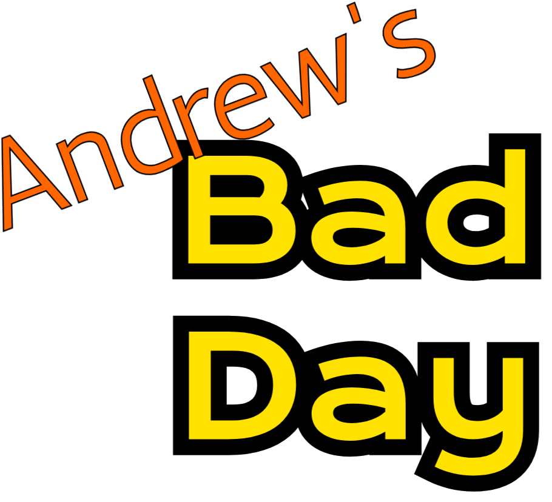

Horror Game
I think this was supposed to be a FNaF fan game.
There is also a lego man and BB8 model in the files for some reason.

Jumpscare

This game was HEAVILY inspired by Conker's Bad Fur Day.
Intro. This is an earlier version of the intro because I am pretty sure he was sitting in throne.